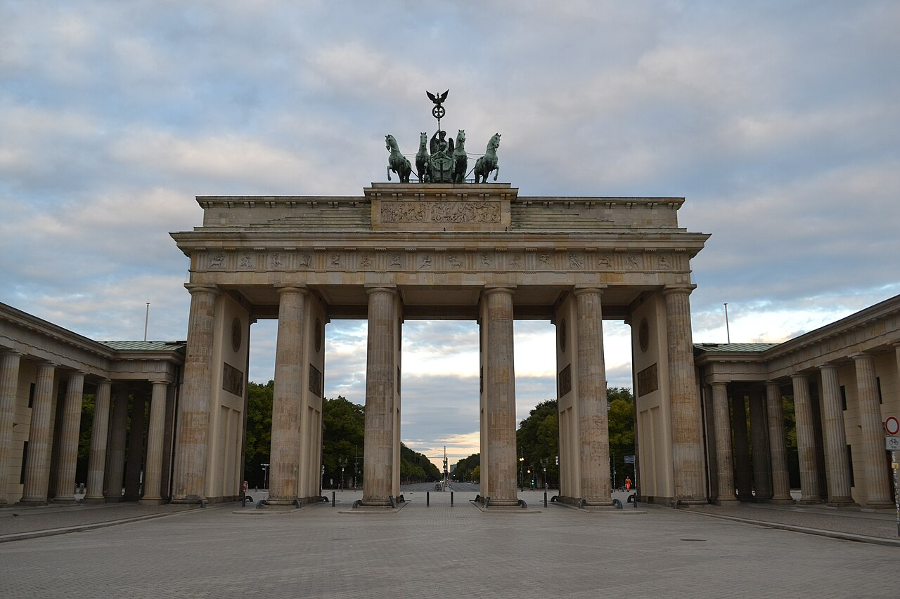
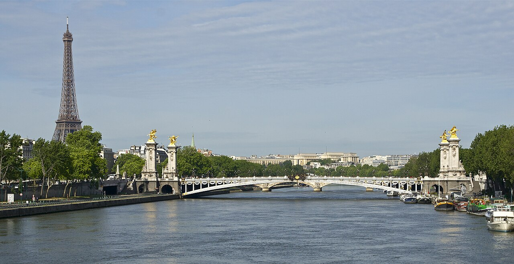
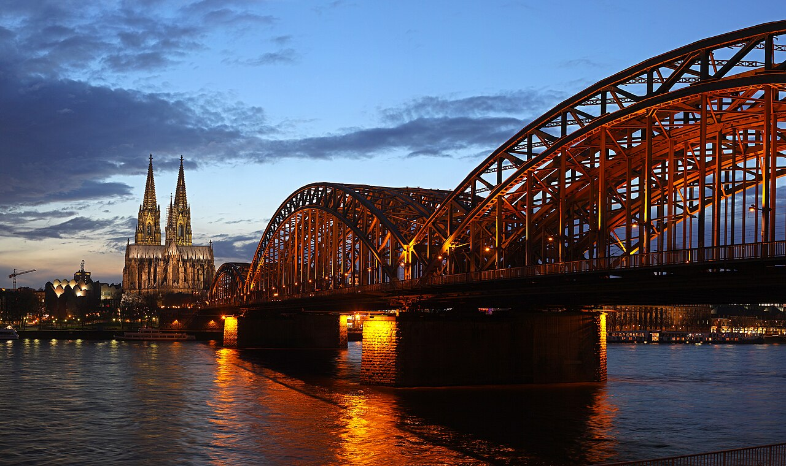

Berlim

Paris

Colônia
Roteiro
Marque passeios com o ícone de calendário em cada item do catálogo e eles caem aqui. Depois arraste pela alça à esquerda para o dia certo — ou para a faixa de dias que aparece embaixo enquanto você arrasta. Toque num dia do mês para abrir.
O roteiro entra no resumo e no JSON da aba Gostos, então dá para me mandar a seleção e a ordem dos dias de uma vez.
As datas fixas — Mauerfall em 09/11, Carnaval em 11/11, Paris Photo de 12 a 15/11 — vêm marcadas no item quando ele é adicionado.
Fontes de pesquisa
Noventa e nove fontes, marcadas por tipo: oficial é poder público, museu ou operadora; comunidade é imprensa local, blog e fórum; ferramenta é mapa, trilha e ingresso.
O que a pesquisa mudou no planejamento
- O Pergamonmuseum, em Berlim, está fechado desde outubro de 2023, com reabertura prevista só para 2027. Nada de Altar de Pergamo nem Portão de Ishtar: parte do acervo está no Humboldt Forum e no Neues Museum.
- O Centre Pompidou, em Paris, está fechado de 2025 a 2030 para a grande renovação. Para arte moderna e contemporânea, o caminho é Palais de Tokyo, Bourse de Commerce, Musée d'Art Moderne e Fondation Louis Vuitton.
- O Musée d'Orsay está em obra até o verão de 2028, mas segue aberto: algumas salas circulam. Vale confirmar no site o que está exposto na sua data.
- O Museum Berggruen, em Charlottenburg, passa por reforma pesada e provavelmente está fechado. Se estiver, o plano B é o Sammlung Scharf-Gerstenberg, no mesmo endereço.
- O Paris Photo cai exatamente na sua janela: 12 a 15 de novembro, no Grand Palais, das 13h às 20h, domingo até 19h. Você chega dia 13 de manhã.
- O Jazzfest Berlin não cai na sua janela (29/10 a 01/11). Para jazz em Berlim, o caminho é A-Trane, Quasimodo, Zig Zag ou Donau115.
- Mercados de Natal: em Berlim, praticamente só o de Landsberger Allee já está aberto (desde 31/10). Em Paris, os clássicos costumam abrir em meados ou fim de novembro, então vale confirmar na semana.
- 09 de novembro é o aniversário da queda do Muro e você estará em Berlim. O Memorial da Bernauer Straße e o Gleis 17 costumam ter programação especial.
- Escurece cedo: em meados de novembro o sol se põe por volta de 16h15 em Berlim e 17h10 em Paris. Museu, trilha e mirante cabem na luz do dia; o fim de tarde já é noite.
Meus gostos
O retrato do que você marcou. Quando terminar a primeira passagem, copie o resumo ou baixe o JSON e me mande: eu ajusto a lista e aprofundo no que interessou. O resumo já leva o roteiro dia a dia junto, na ordem em que você deixou.
Catálogo montado em setembro de 2026. Confirme horários, preços e aberturas na semana da viagem. Tudo que depende de data está marcado com ⚠ verificar.
Fotos: Berlim, Daniel Cox, CC BY-SA 4.0 · Paris, Jebulon, CC0 · Colônia, Thomas Wolf, CC BY-SA 3.0, todas via Wikimedia Commons. Tipografia Archivo, de Omnibus-Type, sob SIL Open Font License.